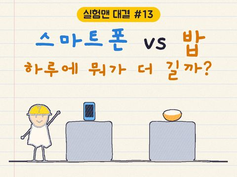
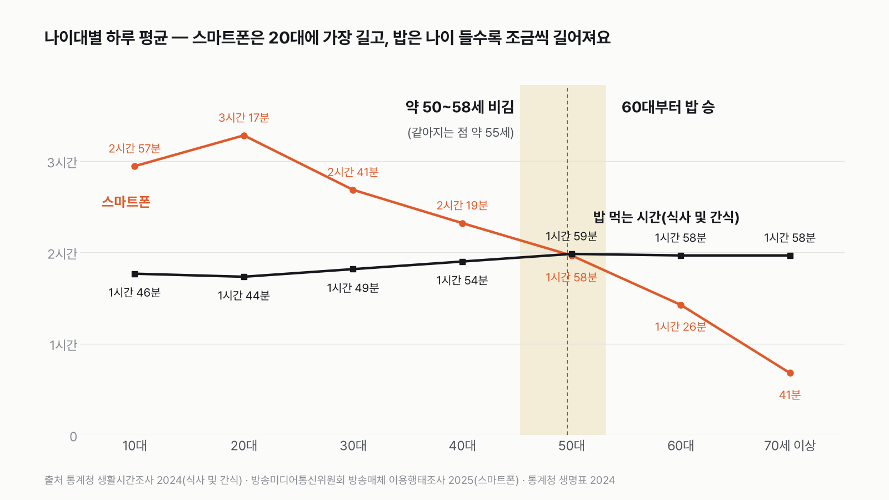
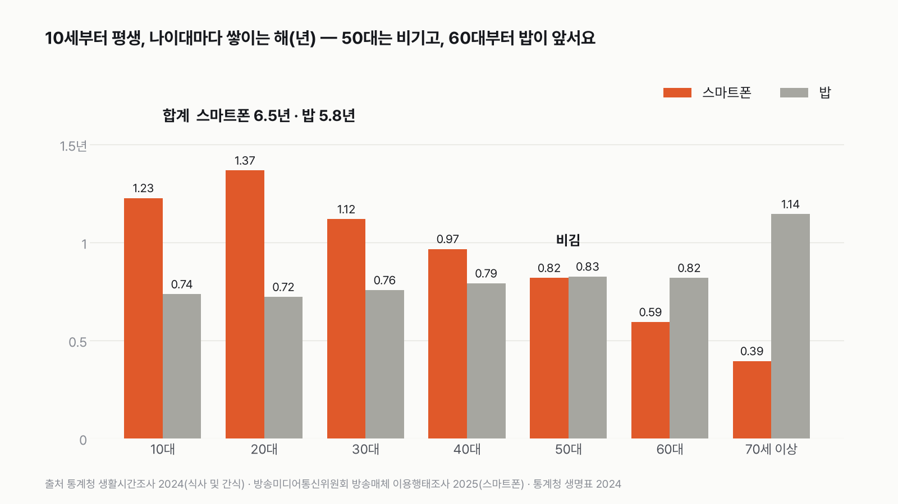
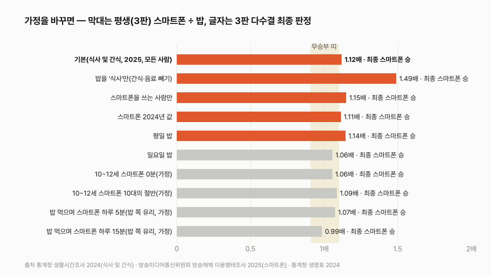

한국인은 스마트폰 보는 시간이 더 길까, 밥 먹는 시간이 더 길까
밥은 하루도 안 거르지만 스마트폰도 하루도 안 놓죠. 어느 쪽이 더 길지 먼저 골라 주세요.

독자 투표
이 대결의 규칙 자세히 (자료·판정 기준)
3줄 요약
- 하루 세 끼에 간식까지 먹는 시간, 그리고 스마트폰을 보는 시간. 어느 쪽이 더 길까요?
- 20대만 보면, 전 국민 평균으로 보면, 평생으로 쌓으면 어떻게 달라질까요? 나이대마다 어떻게 달라질까요?
- 통계청 생활시간조사와 방송매체 이용행태조사로 겨뤘어요. 투표하면 결과가 바로 아래에 열려요.
조건과 규칙
- 밥 먹는 시간은 통계청 생활시간조사의 '식사 및 간식' 시간이에요. 끼니와 간식, 음료를 마시는 시간이 함께 들어가요. 10세 이상이 하루를 10분 단위 일지로 적은 값이에요.
- 스마트폰은 방송매체 이용행태조사(만 13세 이상, 해마다 7천~8천 명)에서 사람들이 답한 하루 이용 시간이에요. 통화는 빼요.
- 두 쪽 다 '모든 사람 평균'으로 견줘요.
- 20대 하루, 전 국민 평균 하루, 평생 누적, 세 판으로 겨뤄요. 판마다 긴 쪽이 이기고, 두 쪽 차이가 1.1배 안이면 무승부예요.
결과 요약
3판 2승 1무 → 최종 스마트폰 승(박빙)
- 20대는 스마트폰이 밥의 1.9배예요. 하루 3시간 17분 대 1시간 44분이에요.
- 나이가 들수록 스마트폰은 줄고 밥은 조금씩 늘어요. 약 50~58세는 비기고(같아지는 점 약 55세), 60대부터는 밥이 이겨요.
- 전 국민 평균은 무승부, 평생은 6.5년 대 5.8년으로 스마트폰이 아슬아슬하게 이겨요. 이 평생 판은 가정 하나로 무승부가 될 만큼 박빙이에요.
그래서? 20~40대에겐 스마트폰이 밥보다 확실히 길어요. 50대는 비기고, 60대부터는 밥이 더 길어요.
독자 예상 vs 데이터 결과
한국인은 스마트폰 보는 시간이 더 길까, 밥 먹는 시간이 더 길까?
데이터로 보면 스마트폰. 2승 1무로 스마트폰이지만 박빙이에요. 20대는 1.9배, 약 50~58세는 비기고, 60대부터는 밥이 이겨요.
3줄 요약
- 하루 세 끼에 간식까지 먹는 시간, 그리고 스마트폰을 보는 시간. 어느 쪽이 더 길까요?
- 20대만 보면, 전 국민 평균으로 보면, 평생으로 쌓으면 어떻게 달라질까요? 나이대마다 어떻게 달라질까요?
- 통계청 생활시간조사와 방송매체 이용행태조사로 겨뤘어요.


숫자 두 개로 줄이면 이래요. 20대는 스마트폰이 밥보다 하루 1시간 33분 길어요. 그 차이는 나이가 들며 줄어들다가 50대에 1분이 돼요.
| 판 | 스마트폰 | 밥(식사 및 간식) | 승자 |
|---|---|---|---|
| 1판 20대 하루 | 3시간 17분 | 1시간 44분 | 스마트폰(1.89배) |
| 2판 전 국민 평균 하루 | 2시간 5분 | 1시간 54분 | 무승부(1.098배) |
| 3판 평생(10세~84세) | 6.5년 | 5.8년 | 스마트폰(1.12배) |
| 최종 | 3판 2승 1무 → 스마트폰 승(박빙) |
| 숫자 | 어떻게 얻었나 |
|---|---|
| 밥 먹는 시간 | 측정: 생활시간조사 2024 일지('식사 및 간식' 분류 그대로) |
| 스마트폰 하루 시간(13세 이상) | 측정이지만 본인이 어림해서 답한 값: 방송매체 이용행태조사 2025 |
| 10~12세의 스마트폰 시간 | 가정: 조사가 13세부터라 10대(13~19세) 값 하루 2시간 57분을 그대로 씀 |
| 평생에 사는 해 | 측정: 2024 생명표 10세 기대여명 74.0년 |
| 60대·70세 이상의 밥 | 가정: 두 나이대에 '60세 이상' 값(1시간 58분)을 함께 씀 |
이 규칙과 가정이면 최종 승자는 스마트폰이에요. 다만 넉넉한 승리는 아니에요. 세 판 가운데 하나는 무승부이고, 평생 판은 위 표의 가정 하나(10~12세 스마트폰 시간)에 걸려 있어요. 이 값이 하루 2시간 3분보다 짧으면 평생 판도 무승부가 돼요.
1판 20대 하루: 스마트폰 승(1.89배)
20대는 스마트폰을 가장 많이 보는 나이대예요. 하루 3시간 17분이고, 20대 전원이 스마트폰을 써요. 그런데 밥 먹는 시간은 1시간 44분으로 나이대 가운데 가장 짧아요. 끼니가 1시간 18분, 간식과 음료가 27분이에요. 둘을 더하면 1시간 45분인데, 통계청이 분 단위로 반올림해서 내기 때문에 1분이 어긋나요. 스마트폰이 밥보다 1시간 33분 길어요.
2판 전 국민 평균 하루: 무승부(1.098배)
13세 이상 모두로 넓히면 스마트폰은 2시간 5분이에요. 70세 이상은 넷 가운데 하나가 스마트폰을 쓰지 않아서 평균이 내려가요. 10세 이상의 밥 먹는 시간은 1시간 54분이에요. 125.2분을 114분으로 나누면 1.098배라, 무승부 기준 1.1배에 아주 조금 못 미쳐요. 두 쪽이 재는 사람도 조금 달라요. 스마트폰은 13세 이상, 밥은 10세 이상이에요. 10~12세의 스마트폰 시간은 조사에 없어요.
스마트폰은 가장 최근 조사인 2025년 값을 기본으로 썼어요. 2024년 값(2시간 6분)을 쓰면 1.106배로 이 판이 스마트폰 승이 돼요. 1분 차이로 판정이 갈리는 판이에요.
3판 평생(10세부터): 스마트폰 승(1.12배)
10세부터 84세까지 나이대마다 하루 시간에 그 나이대에 사는 해를 곱해 더했어요. 스마트폰은 6.5년, 밥은 5.8년이에요. 스마트폰은 10~30대에 3.7년이 쌓여 크게 앞서요. 밥은 60대부터 앞서고, 70세 이상은 남은 해가 14년이라 1.1년이 쌓여요. 젊은 시절의 차이가 끝까지 남아 1.12배로 이겼어요.
그런데 이 판은 10~12세에 달려 있어요. 스마트폰 조사는 13세부터라, 10~12세 3년에는 13~19세 값(하루 2시간 57분)을 그대로 넣었어요. 10~12세가 하루 2시간 3분보다 덜 쓰면 평생 판은 무승부가 되고 최종은 1승 2무가 돼요. 0분으로 놓으면 1.06배, 10대의 절반으로 놓으면 1.09배로 둘 다 무승부예요. 그래도 1판을 이긴 스마트폰이 앞서는 건 같아요.


나이대마다: 약 50~58세 비김, 60대부터 밥 승
나이대마다 스마트폰을 밥으로 나누면 10대 1.67배, 20대 1.89배, 30대 1.48배, 40대 1.22배로 내려오다가 50대에 0.99배가 돼요. 50대는 스마트폰 1시간 58분, 밥 1시간 59분으로 1분 차이예요. 60대는 0.72배, 70세 이상은 0.35배로 밥이 이겨요.
나이대 가운데 나이(40대는 45세, 50대는 55세)를 직선으로 이어 어림하면, 차이가 1.1배 안으로 들어오는 비김 구간은 약 50~58세이고 두 시간이 같아지는 점은 약 55세예요. 저는 스마트폰이 어느 나이까지 이길지 궁금했는데, 50대 한가운데서 1분 차이로 멈추는 게 신기했어요. 스마트폰은 20대 3시간 17분에서 70세 이상 41분으로 크게 줄고, 밥은 1시간 44분에서 1시간 58분으로 조금 늘어요. 판이 뒤집히는 건 주로 스마트폰이 줄어서예요.
가정을 바꾸면
스마트폰 쪽으로 기울이면: 밥에서 간식과 음료를 빼고 끼니만 세면 스마트폰이 3판 모두 이기고, 같아지는 점도 약 64세로 늦어져요. 끼니만으로는 10세 이상 하루 1시간 25분이라서예요. 스마트폰을 쓰는 사람만으로 세거나, 스마트폰 2024년 값을 쓰거나, 밥을 평일 값으로 바꿔도 스마트폰 3승이에요.
밥 쪽으로 기울이면: 밥을 일요일 값으로 바꾸면 2판과 3판이 둘 다 무승부가 돼요. 밥을 먹으면서 스마트폰을 보는 시간이 양쪽에 다 들어가 있다고 보고, 그만큼을 스마트폰에서 빼면 평생 판이 아주 쉽게 무승부가 돼요. 하루 약 2.2분만 넘게 겹쳐도 평생 판은 무승부예요. 하루 15분 겹친다고 보면 평생은 0.99배로 거의 같아져요. 어느 경우에도 밥이 이긴 판은 없었어요. 1판이 넉넉해서 최종은 늘 스마트폰 쪽이지만, 평생 판은 박빙이라고 보는 게 정직해요.


두 시간은 다른 조사에서 왔어요
밥 먹는 시간은 일지에 '주된 행동'으로 적은 시간이고, 스마트폰은 사람들이 스스로 어림한 시간이에요. 밥을 먹으면서 스마트폰을 보면 일지에는 '식사'로 적히지만 스마트폰 시간에도 들어갈 수 있어요. 같은 일지에서 20대가 '미디어를 이용한 여가'로 적은 시간은 하루 2시간 7분인데, 설문의 스마트폰 시간은 3시간 17분이에요. 스마트폰은 다른 일과 겹쳐 쓰는 시간이 많아요.
점수 밖: 잠은 못 이겨요
처음엔 스마트폰과 잠을 붙여 봤는데, 42칸(나이대 × 요일 × 쓰는 정도) 어디서도 스마트폰이 이기지 못했어요. 평생으로는 잠 25년, 스마트폰 6.5년이에요.
이 규칙과 가정이면 최종 판정은 스마트폰의 2승 1무예요. 20~40대에겐 스마트폰이 밥보다 확실히 길고, 약 50~58세는 비기고, 60대부터는 밥이 이겨요. 평생으로 쌓으면 스마트폰이 1.12배로 아슬아슬하게 앞서는 박빙이에요.
이 숫자는 어디서 왔나요
출처
기준일 밥은 2024년 조사, 스마트폰은 2025년 조사(2026년 11월 9일 받음)예요. 조건은 2026년 11월 9일, 계산하기 전에 정했어요.
어떻게 셌나요
- 밥 먹는 시간: 통계청 「생활시간조사」 2024의 '식사 및 간식' 평균 시간이에요. 생활시간조사가 나누는 그대로 썼고, 그 안에 '식사'와 '간식∙음료'가 들어 있어요. 요일평균(평일·토·일을 고루 섞은 값)을 기본으로 했어요.
- 스마트폰: 방송미디어통신위원회 「방송매체 이용행태조사」의 스마트폰 이용시간이에요. 가장 최근인 2025년 조사를 기본으로 썼어요. 해마다 만 13세 이상 7천~8천 명에게 하루 평균 몇 분 쓰는지 묻고(통화 제외), 쓰는 사람의 평균과 이용률을 따로 내요. 모든 사람 평균은 둘을 곱해 구했어요. 2024년으로 검산하면 132.6분 × 95.1% = 126분으로, 방송미디어통신위원회가 발표한 '2시간 6분'과 같아요.
- 평생: 2024 생명표의 10세 기대여명(74.0년)으로 10세부터 84세까지 셌어요. 스마트폰 조사는 13세부터라, 10~12세 3년에는 13~19세 값을 그대로 썼어요(가정). 10대부터 60대까지는 10년씩, 70세 이상은 14년이에요. 생활시간조사 2024는 60세 이상을 한 칸으로만 내서, 60대와 70세 이상의 밥은 같은 값을 썼어요.
- 판정: 판마다 긴 쪽이 이겨요. 1.1배 차이 안이면 무승부예요. 최종은 세 판에서 더 많이 이긴 쪽이에요.
- 나이대별 비김 구간: 나이대 가운데 나이를 직선으로 이어, 차이가 1.1배 안으로 들어오는 나이(약 50~58세)와 같아지는 나이(약 55세)를 어림했어요. 나이대 안에서 실제로 어떻게 바뀌는지는 알 수 없어요.
한계 7가지
이 데이터로 말할 수 없는 것
- 두 시간은 재는 방법이 달라요. 밥은 일지, 스마트폰은 본인 어림이에요. 밥 먹으며 스마트폰을 보는 시간은 두 쪽에 다 들어갈 수 있어요.
- 밥 2024년, 스마트폰 2025년으로 해가 1년 달라요. 스마트폰 2024년 값으로 바꾸면 스마트폰이 3판을 다 이겨요.
- 평생 계산은 지금의 나이대별 시간이 앞으로도 그대로라고 본 계산이에요. 지금의 20대가 60대가 됐을 때 스마트폰을 얼마나 볼지는 알 수 없어요.
- 60대와 70세 이상의 밥은 '60세 이상' 한 값으로 묶여 있어요.
- 비김 구간 50~58세는 나이대 값을 직선으로 이은 어림이에요.
- 10~12세의 스마트폰 시간은 잰 값이 없어요. 이 가정이 평생 판의 승패를 가를 만큼 커요.
- 밥 먹으며 스마트폰을 보는 시간이 하루 몇 분인지는 두 조사로 알 수 없어요. 하루 약 2.2분만 넘게 겹쳐도 평생 판은 무승부예요.
다음 대결
대결 다 보기걷기 vs 운동
걷기·산책 vs 개인 운동, 하루에 한 사람이 더 많은 쪽은?
A걷기·산책vsB개인 운동
투표하러 가기
대결하루 시간투표했어요TV 승TV vs 영상
TV vs 영상, 하루에 본 사람이 더 많은 쪽은?
ATV(실시간 방송)vsB영상(다시보기·동영상)
투표하러 가기
대결하루 시간투표했어요반려동물 승반려동물 vs 식물
반려동물 돌보기 vs 식물 돌보기, 하루에 한 사람이 더 많은 쪽은?
A반려동물 돌보기vsB식물 돌보기
투표하러 가기
대결하루 시간투표했어요책 승책 vs 모바일 게임
책 읽기 vs 모바일 게임, 하루에 한 사람이 더 많은 쪽은?
A책 읽기vsB모바일 게임
투표하러 가기
대결하루 시간투표했어요신문 승신문 vs SNS
신문 보기 vs SNS 교제, 하루에 한 사람이 더 많은 쪽은?
A신문 보기vsBSNS 교제
투표하러 가기
대결하루 시간투표했어요매장 승매장 vs 온라인 쇼핑
매장 쇼핑 vs 온라인 쇼핑, 하루 시간일지에 적은 사람이 더 많은 쪽은?
A매장 쇼핑vsB온라인 쇼핑
투표하러 가기
대결투표했어요결과: A이병 월급 vs 알바 한 달
이병 월급이 알바 한 달의 몇 %인지, 2017년보다 2026년에 2배 넘게 커졌을까?
A2배 넘게 커졌다vsB2배는 안 된다
투표하러 가기
대결설문투표했어요믿을 수 있다 승우리 사회, 믿을 수 있다 vs 없다
우리 사회, '믿을 수 있다' vs '믿을 수 없다' 더 많은 쪽은?
A믿을 수 있다vsB믿을 수 없다
투표하러 가기
새 글 나오면 받아 보기
피드 리더 앱에 이 사이트 주소를 한 번 넣어 두면, 새 글이 올라올 때 앱에 떠요. 가입이나 메일 주소는 필요 없어요.
받는 법 보기
- 피드 리더 앱을 하나 골라요. 새 글을 모아 보여 주는 앱이에요. 예를 들면 Feedly나 Inoreader가 있어요. 둘 다 무료고 웹·휴대폰에서 써요.
- 앱에서 '구독 추가'(+)를 누르고 아래 주소를 붙여 넣어요.
- 끝이에요. 새 글이 올라오면 앱 목록에 떠요.
https://protofu.github.io/opendata-insight/feed.xmlFeedly를 쓴다면 여기를 눌러 바로 추가할 수도 있어요.